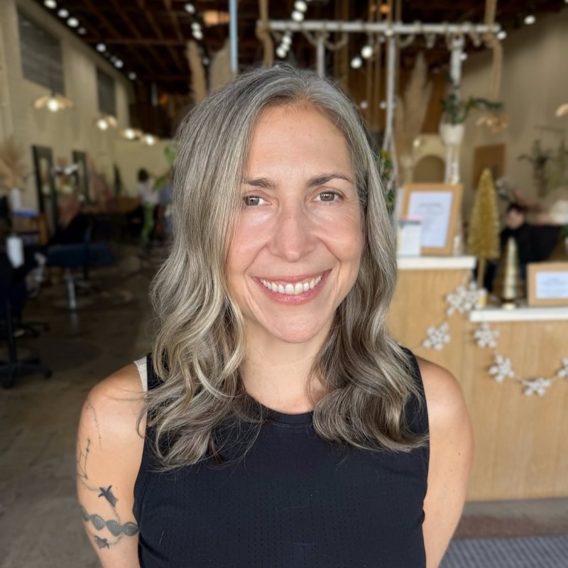
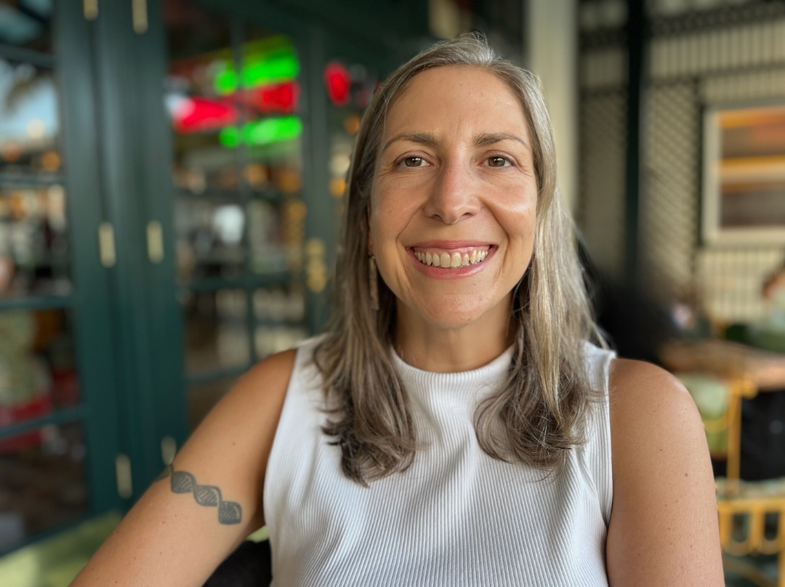

Operations & Strategy
San Diego-based strategist, builder, and advocate.
My superpower is turning complexity into clarity for purpose-driven organizations, teams, and communities.


About Me
My superpower is operations and strategy, combined with a deep, genuine care for the humans and animals in this world.
I'm a San Diego-based strategist and co-founder of Inclusion Geeks, where we help organizations build more equitable workplaces. With my business partner, I co-host the She+ Geeks Out Podcast, featuring honest conversations about equity, tech, and what it means to lead with intention.
I serve on the board of She Should Run, a nonpartisan organization inspiring more women to run for office. I was recently elected to the North Park Planning Committee, a volunteer-elected board representing North Park residents on land use and community development. I'm also a proud member of Business for Good San Diego, a community committed to using business as a force for positive change.
Outside of work, I volunteer at the San Diego Zoo, because animal welfare is personal, not performative. My Substack, Gray Matter, is where I explore eco-socialist and feminist ideas.
Let's ConnectPortfolio
A mix of civic tech, community tools, and passion projects.
A love letter to Keanu Reeves and the philosophy of genuine kindness. Ask yourself: what would he do?
whatwouldkeanudo.com ↗A daily tracker monitoring geopolitical tensions and conflict escalation around the globe.
didwestartawartoday.com ↗Tracking protest movements worldwide, because solidarity requires knowing what's happening.
globalprotesttracker.com ↗A curated resource library for equity practitioners, teams, and folks doing the work.
library.inclusiongeeks.com ↗Connecting people to acts of kindness and community support, one good deed at a time.
kindconnector.com ↗My background is in front-end web development, and pairing with Claude Code has completely changed what I can create. I'm building faster, tackling things I never could have done solo, and turning ideas into reality. It feels less like using a tool and more like having a technical co-pilot.
The stack
From the mic to the neighborhood, here's where I show up beyond the day job.
Writing & Podcasting
🌊 Local Community
Proud volunteer at one of the world's most beloved conservation institutions. Animals deserve advocates.
A community committed to using business as a tool for positive social and environmental impact in San Diego.
Elected to represent North Park residents on land use and community development. Neighborhood democracy in action.
Contact
Whether you need operations strategy, want to collaborate on something meaningful, or just want to say hi. My inbox is open.